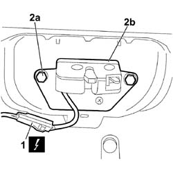
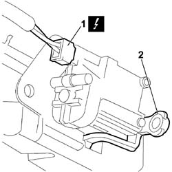

7015B10 SINGLE TAILGATE LOCK - R+R OR REPAIR WITH PANEL/PROTECTION REMOVED
- Path
- Procedures > 70 FITTINGS > 7015 TAILGATE/FLAP > 7015B TAILGATE CLOSING/OPENING DEVICES > 7015B10 SINGLE TAILGATE LOCK - R+R OR REPAIR WITH PANEL/PROTECTION REMOVED
- Kind
- repair procedure (removal / refitting; the operation number is the code)
- Applies to
- all engines; all production periods
- Interactive page
- https://sloeber94.github.io/elrnDB-fCrm/en/#/194000949
Applies to: all engines; all production periods
 Removing
Removing
 Refitting
Refitting- Open the tailgate.
- Turn the ignition key to the OFF position.
- Disconnect the negative battery terminal.
Description | Connector | |
|---|---|---|
BATTERY |
Op. 7015A04 TAILGATE INTERIOR PANEL - R+R
1. Disconnect the electrical connection from the boot opening switch.
Description | Connector | |
|---|---|---|
1 | BOOT OPENING CONTROL SWITCH |
2. Undo the bolts (2a) and remove the tailgate lock (2b).

Applies to: all engines; all production periods
1. Disconnect the electrical connection from the boot lock gear motor.
Description | Connector | |
|---|---|---|
1 | BOOT LOCK GEARED MOTOR |
2. Disengage the emergency opening cable (if present) from the retainers and remove the lock from the tailgate.

Applies to: all engines; all production periods
Op. 7015B70 TAILGATE LOCK MOTOR - R.R AND CHECK LOCK SUPPLY LINE
Applies to: all engines; all production periods
Refitting
RemovingOp. 7015B70 TAILGATE LOCK MOTOR - R.R AND CHECK LOCK SUPPLY LINE
- Position the lock on the tailgate.
- Engage the emergency cable (if present).
- Connect the electrical connection to the boot lock gear motor.
See N057 BOOT LOCK GEARED MOTOR
Description | Connector | |
|---|---|---|
BOOT LOCK GEARED MOTOR |
- Tighten the retaining bolts.
- Connect the electrical connection to the boot opening switch.
Description | Connector | |
|---|---|---|
BOOT OPENING CONTROL SWITCH |
Op. 7015A04 TAILGATE INTERIOR PANEL - R+R
- Connect the negative battery terminal.
Description | Connector | |
|---|---|---|
BATTERY |
Topics linked from this page (5)
- 7015A04 TAILGATE INTERIOR PANEL - R+R
- 7015B70 TAILGATE LOCK MOTOR - R.R AND CHECK LOCK SUPPLY LINE
- A001 BATTERY
- I011 BOOT RELEASE SWITCH
- N057 BOOT LOCK GEARED MOTOR